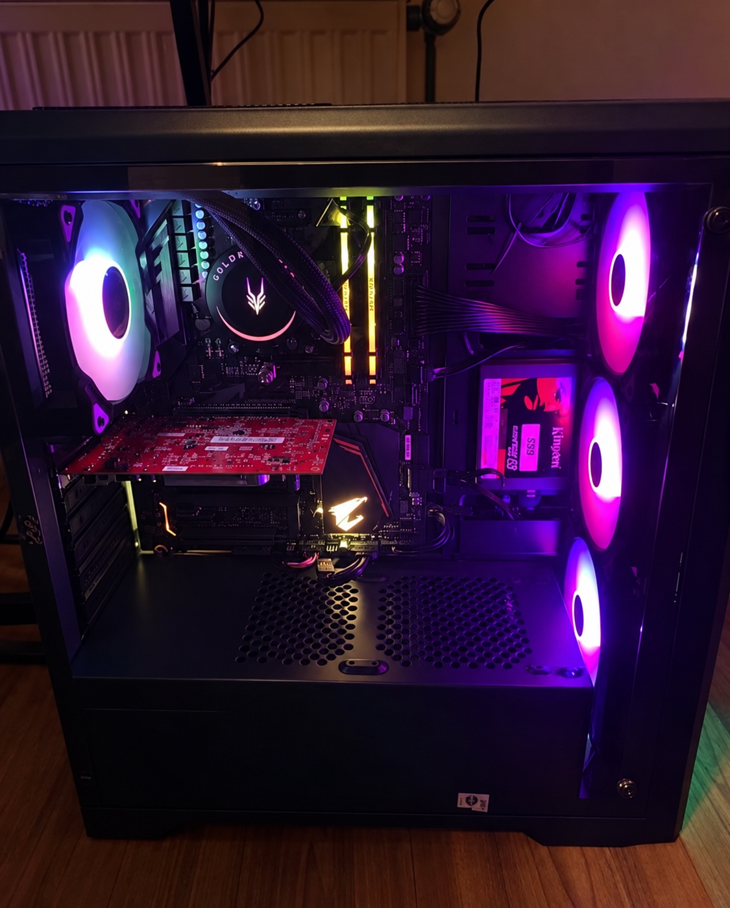
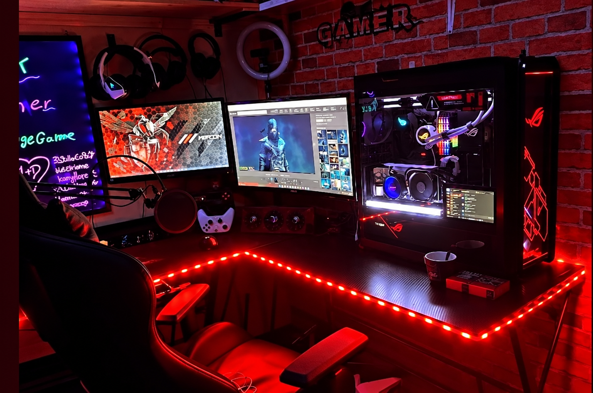
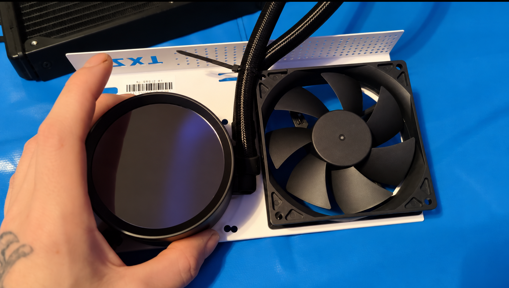

Mein altes Setup · Seit 2022
So habe ich
angefangen.
Die ersten Komponenten, der Wechsel zu ASUS ROG und die ersten Umbauten an der Kühlung.
-

Der Anfang · 2022 Der Anfang2022 hat alles angefangen
Mit diesen Komponenten begann meine Setup-Geschichte:
- Mainboard
- B450 AORUS ELITE
- Prozessor
- AMD Ryzen 5 5600
- Arbeitsspeicher
- Kingston DDR4 HyperX Predator 32 GB
- Grafikkarte
- ASUS Radeon RX 480 ROG STRIX OC 8GB GDDR5
-

Mein damaliges Setup Wenig späterDer erste Umbau
Wenig später baute ich mein Setup auf ein ASUS ROG Strix B450-F Gaming um. Dazu kam eine ASUS ROG Strix LC III 360 ARGB LCD White Edition als Wasserkühlung.
-

NZXT Kraken G12 · GPU-Umbau AIO-Umbau der GrafikkarteAuch die RX 480 bekam eine AIO
Meine ASUS Radeon RX 480 ROG STRIX OC 8GB baute ich ebenfalls auf eine AIO-Wasserkühlung um. Dafür verwendete ich die NZXT RL-KRX53 zusammen mit der NZXT Kraken G12 GPU-Montagehalterung für Kraken AIOs.